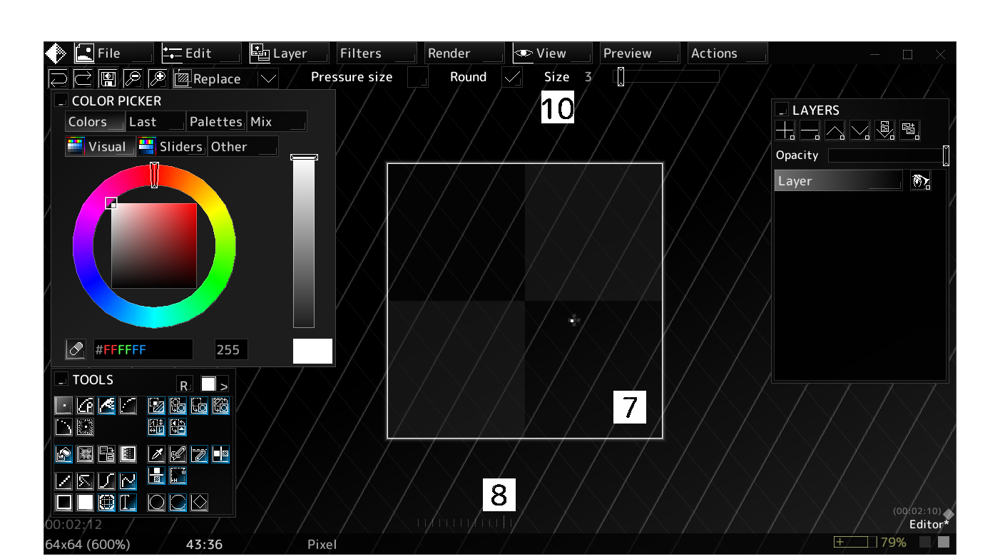
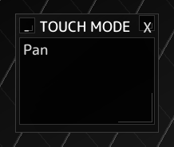
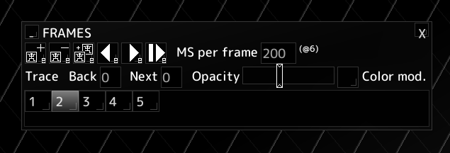

The Editor is the main part of voidsprite where image editing takes place.
Most Editor actions are located here.
This bar contains quick undo, redo, zoom and save actions, as well as a dropdown to choose the current brush blend mode.
This panel controls the current active color. In an Indexed editor, you may only choose colors from the current palette.
More about the Color picker: About color modes
This panel lets you choose the current active brush/tool. Hover over one of the tool buttons for more details about its use.
Tools marked with a blue border override the default right click action - otherwise right click picks color from the current image.
The button controls replace mode. When enabled, only already opaque pixels can be drawn on.
The button opens the Patterns panel.
Timer that keeps track of active editing time. Only counts up when the window is focused.
This panel shows you a list of all the layers in your project. Buttons above the list let you add, delete, move, merge and duplicate the current layer.
Clicking one of the layers sets it to be the current active layer.
The Opacity slider controls the current layer's opacity and is not available in Indexed mode.
The current image.
Left click to use the current brush/tool.
Right click to pick the color from the current image at cursor position. If Ctrl is held, the color is picked from the current layer instead of the whole image.
Brushes/tools with a blue border override this action.
A history of your recent actions. To the left are undoable actions - to the right are redoable actions.
Appears only when there are unsaved changes in the current session.
Time since last save is shown to the left of the icon.
◆ means there are unsaved changes.
◇ means there are unsaved changes, but a Recovery autosave has occurred.
This section of the 2 Action bar has options available for the current brush.
When using a touch screen, the Touch mode panel will appear.

The Touch mode panel lets you switch between different modes that control what touch screen input does:

The Frames panel can be open with > and contains frame-based animation tools.
Buttons at the top of the panel can add, delete, duplicate, move frames as well as play/pause the whole animation.
The second row contains options for forward/backward tracing other animation frames. You can set the number of previous and next frames to trace, as well as the opacity and whether to use color modulation.
Switch the active frame by clicking it in the frames list. Each frame has its own list of layers, which will update the 6 Layers list.
Add a reference images to your current canvas using > or .
Reference images can be shown either in a floating Reference panel or above/below the canvas.